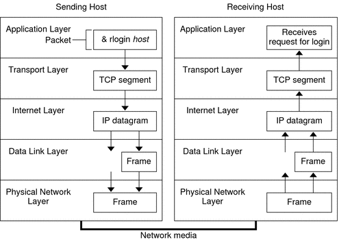

|
|||
|
1. Solaris TCPIP Protocol Suite (Overview) Introducing the TCP/IP Protocol Suite Finding Out More About TCP/IP and the Internet 2. Planning an IPv4 Addressing Scheme (Tasks 3. Planning an IPv6 Addressing Scheme (Overview) 4. Planning an IPv6 Network (Tasks) 5. Configuring TCP/IP Network Services and IPv4 Addressing (Tasks) 6. Administering Network Interfaces (Tasks) 7. Enabling IPv6 on a Network (Tasks) 8. Administering a TCP/IP Network (Tasks) 9. Troubleshooting Network Problems (Tasks) 10. TCP/IP and IPv4 in Depth (Reference) 12. About Solaris DHCP (Overview) 13. Planning for DHCP Service (Tasks) 14. Configuring the DHCP Service (Tasks) 15. Administering DHCP (Tasks) 16. Configuring and Administering DHCP Clients 17. Troubleshooting DHCP (Reference) 18. DHCP Commands and Files (Reference) 19. IP Security Architecture (Overview) 21. IP Security Architecture (Reference) 22. Internet Key Exchange (Overview) 24. Internet Key Exchange (Reference) 25. Solaris IP Filter (Overview) 28. Administering Mobile IP (Tasks) 29. Mobile IP Files and Commands (Reference) 30. Introducing IPMP (Overview) 31. Administering IPMP (Tasks) Part VI IP Quality of Service (IPQoS) 32. Introducing IPQoS (Overview) 33. Planning for an IPQoS-Enabled Network (Tasks) 34. Creating the IPQoS Configuration File (Tasks) 35. Starting and Maintaining IPQoS (Tasks) 36. Using Flow Accounting and Statistics Gathering (Tasks) |
How the TCP/IP Protocols Handle Data CommunicationsWhen a user issues a command that uses a TCP/IP application layer protocol, a series of events is initiated. The user's command or message passes through the TCP/IP protocol stack on the local system. Then, the command or message passes across the network media to the protocols on the remote system. The protocols at each layer on the sending host add information to the original data. Protocols on each layer of the sending host also interact with their peers on the receiving host. Figure 1-1 shows this interaction. Data Encapsulation and the TCP/IP Protocol StackThe packet is the basic unit of information that is transferred across a network. The basic packet consists of a header with the sending and receiving systems' addresses, and a body, or payload, with the data to be transferred. As the packet travels through the TCP/IP protocol stack, the protocols at each layer either add or remove fields from the basic header. When a protocol on the sending system adds data to the packet header, the process is called data encapsulation. Moreover, each layer has a different term for the altered packet, as shown in the following figure. Figure 1-1 How a Packet Travels Through the TCP/IP StackThis section summarizes the life cycle of a packet. The life cycle starts when you issue a command or send a message. The life cycle finishes when the appropriate application on the receiving system receives the packet. Application Layer: Where a Communication OriginatesThe packet's history begins when a user on one system sends a message or issues a command that must access a remote system. The application protocol formats the packet so that the appropriate transport layer protocol, TCP or UDP, can handle the packet. Suppose the user issues an rlogin command to log in to the remote system, as shown in Figure 1-1. The rlogin command uses the TCP transport layer protocol. TCP expects to receive data in the form of a stream of bytes that contain the information in the command. Therefore, rlogin sends this data as a TCP stream. Transport Layer: Where Data Encapsulation BeginsWhen the data arrives at the transport layer, the protocols at the layer start the process of data encapsulation. The transport layer encapsulates the application data into transport protocol data units. The transport layer protocol creates a virtual flow of data between the sending and receiving application, differentiated by the transport port number. The port number identifies a port, a dedicated location in memory for receiving or sending data. In addition, the transport protocol layer might provide other services, such as reliable, in order data delivery. The end result depends on whether TCP, SCTP, or UDP handles the information. TCP SegmentationTCP is often called a “connection-oriented” protocol because TCP ensures the successful delivery of data to the receiving host. Figure 1-1 shows how the TCP protocol receives the stream from the rlogin command. TCP then divides the data that is received from the application layer into segments and attaches a header to each segment. Segment headers contain sending and receiving ports, segment ordering information, and a data field that is known as a checksum. The TCP protocols on both hosts use the checksum data to determine if the data transfers without error. Establishing a TCP ConnectionTCP uses segments to determine whether the receiving system is ready to receive the data. When the sending TCP wants to establish connections, TCP sends a segment that is called a SYN to the TCP protocol on the receiving host. The receiving TCP returns a segment that is called an ACK to acknowledge the successful receipt of the segment. The sending TCP sends another ACK segment, then proceeds to send the data. This exchange of control information is referred to as a three-way handshake. UDP PacketsUDP is a “connectionless” protocol. Unlike TCP, UDP does not check that data arrived at the receiving host. Instead, UDP formats the message that is received from the application layer into UDP packets. UDP attaches a header to each packet. The header contains the sending and receiving ports, a field with the length of the packet, and a checksum. The sending UDP process attempts to send the packet to its peer UDP process on the receiving host. The application layer determines whether the receiving UDP process acknowledges the reception of the packet. UDP requires no notification of receipt. UDP does not use the three-way handshake. Internet Layer: Where Packets Are Prepared for DeliveryThe transport protocols TCP, UDP, and SCTP pass their segments and packets down to the Internet layer, where the IP protocol handles the segments and packets. IP prepares them for delivery by formatting them into units called IP datagrams. IP then determines the IP addresses for the datagrams, so that they can be delivered effectively to the receiving host. IP DatagramsIP attaches an IP header to the segment or packet's header, in addition to the information that is added by TCP or UDP. Information in the IP header includes the IP addresses of the sending and receiving hosts, the datagram length, and the datagram sequence order. This information is provided if the datagram exceeds the allowable byte size for network packets and must be fragmented. Data-Link Layer: Where Framing Takes PlaceData-link layer protocols, such as PPP, format the IP datagram into a frame. These protocols attach a third header and a footer to “frame” the datagram. The frame header includes a cyclic redundancy check (CRC) field that checks for errors as the frame travels over the network media. Then, the data-link layer passes the frame to the physical layer. Physical Network Layer: Where Frames Are Sent and ReceivedThe physical network layer on the sending host receives the frames and converts the IP addresses into the hardware addresses appropriate to the network media. The physical network layer then sends the frame out over the network media. How the Receiving Host Handles the PacketWhen the packet arrives on the receiving host, the packet travels through the TCP/IP protocol stack in the reverse order from which it was sent. Figure 1-1 illustrates this path. Moreover, each protocol on the receiving host strips off header information that is attached to the packet by its peer on the sending host. The following process occurs:
TCP/IP Internal Trace SupportTCP/IP provides internal trace support by logging TCP communication when an RST packet terminates a connection. When an RST packet is transmitted or received, information on as many as 10 packets, which were just transmitted, is logged with the connection information. |
||
|